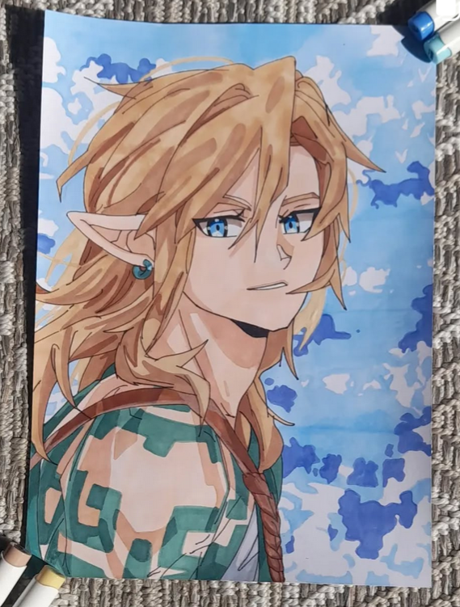
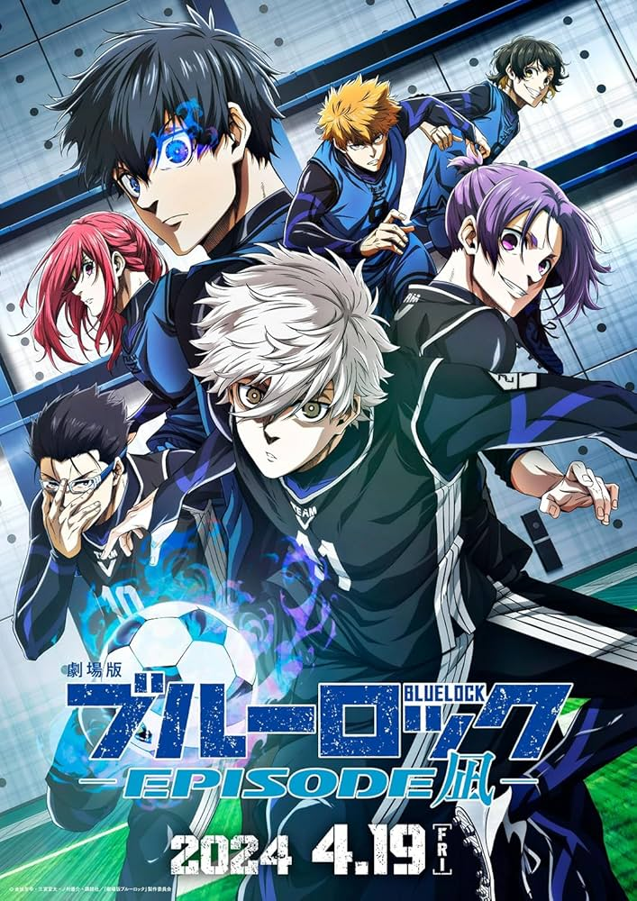
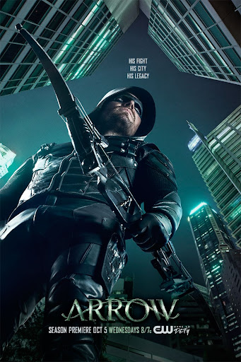
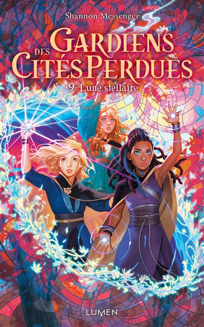

Je suis actuellement étudiante en BUT2 Informatique à l'IUT d’Orsay. Passionnée par la technologie et le développement logiciel, j’ai travaillé sur divers projets intégrant programmation, gestion de bases de données et infrastructures réseau.
En plus de mes compétences techniques, j'ai une forte capacité à gérer des projets, aussi bien en développement qu’en gestion de bases de données.
École privée Educ-Etic à distance
Spécialités : Numériques et Sciences Informatiques, Physique-Chimie (Mathématiques en 1ère)
IUT d’Orsay
Acquisition des bases en développement logiciel, bases de données, systèmes et réseaux
IUT d’Orsay
Parcours A : Réalisation d’applications - Conception, développement, validation
Passionnée de football, je pratique régulièrement en club, suis l’actualité sportive et ne rate aucun match du psg.

J’aime dessiner à mes heures perdues, en particulier des personnages de manga.

Grande fan de mangas et d’animes, je découvre régulièrement de nouvelles œuvres, ce qui m'inspire à dessiner.

J’aime regarder des séries ou des films, seule, avec ma famille ou mes amies.
J’aime aussi beaucoup jouer à des jeux vidéos avec ma meilleure amie et ma famille, comme fifa ou encore fortnite.
J’aime faire des sorties avec ma famille et mes amies, comme aller au cinéma, faire de la patinoire, faire des jeux de société, partir en vancances...

Lire est un autre de mes passe-temps, notamment les romans d'aventures, de sciences-fiction et de mystère.
J'aime m’informer quotidiennement sur l’actualité nationale et internationale.